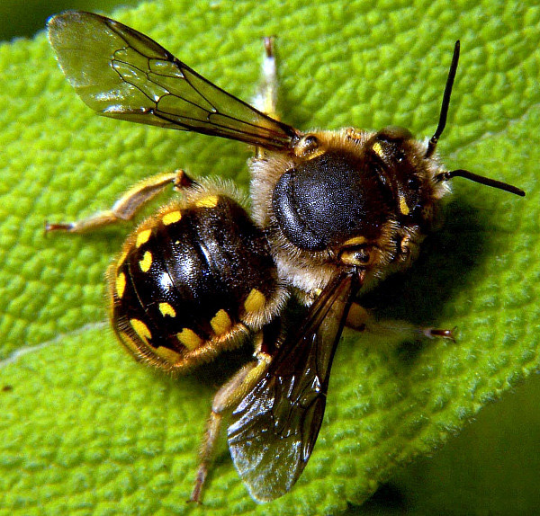

Las abejas son insectos sociales y colaboradores que viven en las colmenas formando grandes colonias , lo que ha proporcionado a las sociedades humanas miel y cera de abeja desde hace miles de años.
Las abejas son insectos sociales y colaboradores que viven en las colmenas formando grandes colonias , lo que ha proporcionado a las sociedades humanas miel y cera de abeja desde hace miles de años.
La miel está compuesta principalmente por azúcar, así como por una mezcla de aminoácidos, vitaminas, minerales, hierro, cinc y antioxidantes. Además de usarse como edulcorante natural, la miel se usa como antiinflamatorio, antioxidante y agente antibiótico.
Abejas Apoideas
La familia de las Apoideas o Apidae es una de las más extensa y en este grupo se incluyen algunos de los tipos de abeja más conocidos. Destaca la apis mellifera, o abeja europea, también conocida como abeja doméstica, la más utilizada en la apicultura para la producción de miel, fácilmente reconocible por color dorado y las rayas negras de su abdomen.
Abejas Megachilidae
Este grupo de abejas abarca especies muy diversas ya que incluye tanto insectos de tipo solitario, como abejas que conviven en grandes colmenas. Las Megachilidae son en general abejas con una gran capacidad de polinización (de ahí su importancia). Algunas construyen sus nidos en oquedades que logran hacer en la madera, por lo que se las conoce como abejas carpinteras, estando incluidas, además, en el grupo de las abejas negras, otras los hacen con pequeñas partículas de arcilla o ramas, de ahí que se las llame abejas albañiles y también hay subespecies de carácter parasitario, que se establecen en nidos creados por otras abejas.
Abejas Colletidae
Son insectos que presentan una serie de particularidades que hace que se diferencien del resto de las abejas. Al contrario de lo que ocurre con otras especies, los distintos tipos de abejas colletidae no transportan el polen en su abdomen, sino en la boca. Además, poseen una glándula, llamada de Dufour, que segrega una sustancia transparente con la que recubren el interior de sus colmenas, hechas, casi siempre, en el suelo.
Abejas Adrenidae
La mayoría de especies que engloba esta familia son abejas pequeñas en las que se aprecia claramente las bandas amarillas y negras características de estos insectos. Aun así, también hay que incluir algunos ejemplares gigantes que se dan principalmente en el hemisferio sur
Abejas Melittidae
Son diurnas y proliferan especialmente en el hemisferio norte. De este tipo de abejas hay más de 180 especies, todas grandes recolectoras de pólenes de flores determinadas. En ellas destaca la longitud de sus patas traseras (con las que puede atrapar más cantidad de polen) y también la boca con aparato succionador para atrapar el néctar de las flores con total eficacia.
Abejas Halictidae
Por el número de especies que agrupa, esta familia de abejas es de las más extensas, con ejemplares de características muy diversas. Algunos pueden llegar a confundirse con avispas, porque no presentan vellosidades en el conjunto del cuerpo, y también los hay que llaman la atención por los colores intensos, sobre todo verdes y azules metalizados, que lucen en el abdomen y que hace que en ocasiones también se les confunda con moscas de gran tamaño. Algunas son abejas negras, es decir, no tienen las habituales rayas amarillas y la mayoría son abejas muy poco agresivas